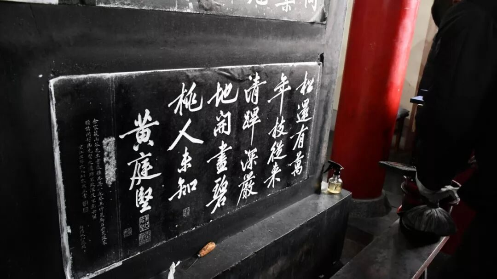
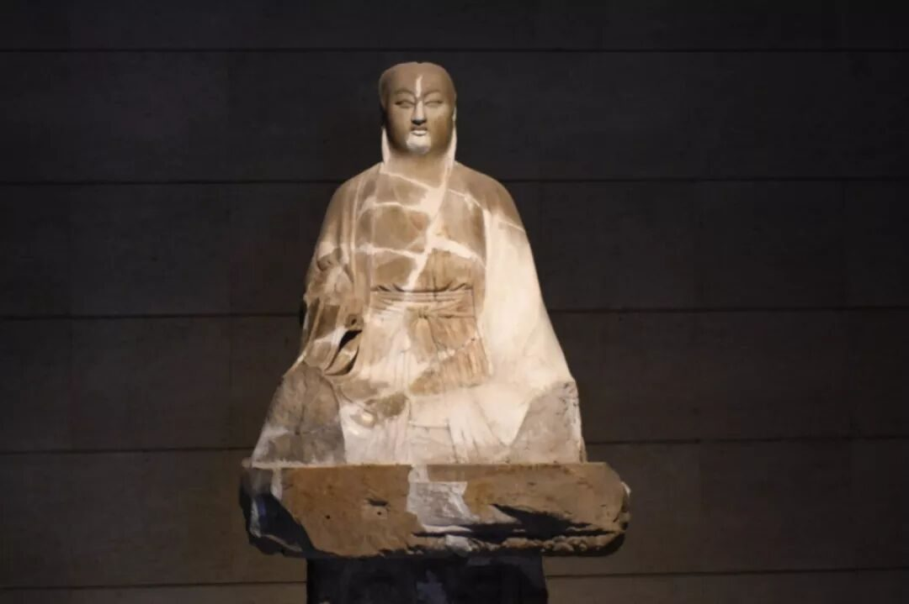
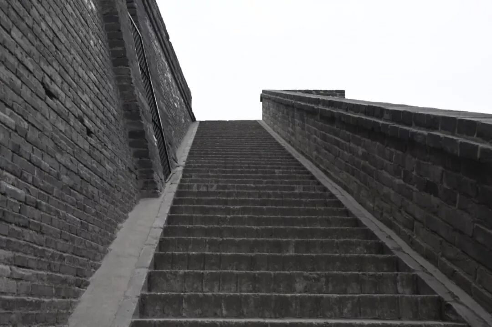

【行者无疆 · 韶忆长安】 西安丨一眼望千年
”行者无疆 韶忆长安“
古建筑与艺术珍品篇

山河千里国，城阙九重门。
不睹皇居壮，安知天子尊。
——骆宾王《帝京篇》

西安像一位沉郁中敛的关中汉子，背手立在秦岭下，渭河畔，他满腹经纶，历经沧桑，他的每一条经络里，每一管血液里，使行者们不惧千山万水，奔向于他。

碑林瑰宝
圣儒、哲人的浩瀚石经；秦汉文人的古朴遗风；魏晋名家的绝代佳作......块块碑石尽显书法名家洒脱墨迹，每个字犹如鬼斧神工，柔美、苍劲、娟秀、恢弘、......呈现出一种岁月的沧桑。石头虽不会说话，但篆刻于其上的文字不断向世人传达着思想内涵和文人风骨。

亏得墨香留墨宝，幸依奇笔刻奇珍。千秋风韵今犹在，石上诗书惊世人。那些碑石，已不单纯是书法艺术的化身，而是历史文化的浓缩，是千年圣迹的里程碑......

游览石刻艺术馆，犹如穿越中华文明的千年时空，品味着一百五十余尊精美独特的古代佛教造像，皆是美轮美奂，无不折射出古代长安的帝都气象，凝聚着古人对于佛像的虔诚与信仰。


暗淡了刀光剑影，远去了鼓角争鸣。难以想象，曾几何时，朝代更迭，城墙内外多少次血流成河，喊杀震天。多少次千钧一发，危如累卵。那城墙上布满的弹孔，炮弹打出的豁口，足以想象兵家必争之地的累累伤痕。饱经历史沧桑却见证时光流转，明城墙依然以它高昂的姿态雄踞一方。



图片丨行者无疆实践团
文字丨郭新明
责编丨牛直达
审核丨邓子孚 潘雯雯
行者无疆实践团
QQ：2758025831

随行者一起认识世界
长按二维码关注